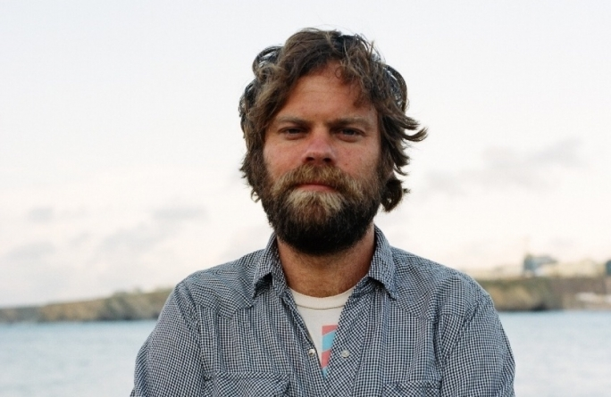

Slowdive é uma banda de rock formada em 1989, em Reading, Berkshire, Inglaterra, por Nick Chaplin (baixo), Rachel Goswell (vocais, guitarra), Neil Halstead (vocais, guitarra) e Christian Savill (guitarra). Vários bateristas tocaram com a banda, incluindo Ian McCutcheon, Adrian Venda e Scott Simon.
O nome do grupo é o resultado (vem) de um sonho de Chaplin e de uma conversação com Rachel Goswell que sugestionou "Slowdive", o nome de uma canção de um de seus grupos favoritos, Siouxsie and the Banshees. Goswell e Halstead se conheciam desde a infância em Reading, Berkshire, quando Goswell era uma fã obcecada pelos Smiths. Quando Savill e Chaplin deixaram a banda depois do lançamento do álbum Pygmalion, os membros restantes formaram a Mojave 3, com influências mais voltadas para o country e folk. A banda retornou em 2014. Wikipédia
Nick Chaplin
(baixo)

Rachel Goswell
(guitarra, vocalista)

Neil Halstead
(guitarra, vocalista)
Christian Savill
(guitarra)

Simon Scott
(bateria)